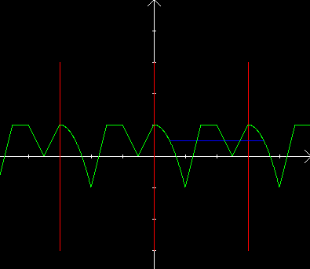

| Choisissez votre langue ! | Choose your language ! |
Fonctions périodiques
Periodic functions
Définitions
On suppose dans toute cette page que D=ℝ tout entier. On considère donc des fonctions définies partout.p désigne un réel >0.
Definitions
We assume throughout this page that D=ℝ. We therefore consider functions defined everywhere.p denotes a real >0.
définition 1
On dit que
'f admet p pour période'
si: f(x+p)=f(x) ∀x∈ℝ.
definition 1
We say that
'f admits p for period'
if: f(x+p)=f(x) ∀x∈ℝ.
Exemples:
- Les fonctions constantes admettent tout nombre pour période.
- sinus et cosinus admettent 2π pour période.
- tangente admet π pour période
Examples:
- Constant functions accept any number for period.
- sine and cosine admit 2π for period.
- tangent admits π for period
propriété 1
Si f admet p pour période alors f admet également 2p, 3p, ..kp, (k entier >0) pour périodes.
property 1
If f admits p for period then f also admits 2p, 3p, ..kp, (k integer > 0) for periods.
A la différence des fonctions constantes, pour certaines fonctions périodiques f, il existe un
'plus petit'
nombre p>0 tel que f admet p pour période. Une telle fonction f est dite périodique de période p.
Unlike constant functions, for some periodic functions f, there exists a
'smaller'
number p>0 such that f has p for period. Such a function is said to be periodic with period p.
définition 2
Dans ce cas ce nombre sera appelé
'la'
période de la fonction.
definition 2
In this case this number will be called
'fundamental or primitive or basic or prime'
period of the function.
Pour ceux à qui l'existence de ce plus petit élément parait une évidence, signalons que la fonction caractéristique de ℚ admet pour période tout nombre rationnel aussi petit soit-il. Elle n'en est pas pour autant constante. Nous verrons par la suite que si on impose à la fonction des conditions supplémentaires (continuité), la période est bien définie pour toute fonction périodique vérifiant ces conditions. Nous négligeons pour le moment les cas 'pathologiques' comme l'exemple ci-dessus.
Voici la représentation d'une fonction numérique de période 3:
Voici la représentation d'une fonction numérique de période 3:
For those to whom the existence of this smallest element seems obvious, let us point out that the characteristic function of ℚ admits for period any rational number, no matter how small. It is not, however, constant. We will see later that if we impose on the function additional conditions (continuity), the period is well defined for any periodic function satisfying these conditions. We neglect for the moment the 'pathological' cases like the example above.
Here is the representation of a numerical function of period 3:
Here is the representation of a numerical function of period 3:

On voit que :
We see that :
propriété 2
Une fonction périodique de période p est connue partout dès qu'elle est connue sur un intervalle quelconque de longueur p.
property 2
A periodic function of period p is known everywhere as soon as it is known over any interval of length p.
Compatibilité avec les opérations algébriques
Cette notion offre un bon niveau de compatibilité avec la structure d'espace vectoriel de ℝℝ (voir ).Pour ce qui est du produit et du quotient les choses sont un peu moins évidentes (voir ).
Périodicité et composition
La périodicité de f entraîne celle de gof, mais cette condition n'est pas nécessaire (voir )Relation avec la variation
Une fonction périodique ne peut être , parce qu'elle ne peut être .Compatibility with algebraic operations
This notion offers a good level of compatibility with the vector space structure of ℝℝ (see ).As for the product and the quotient, things are a little less obvious (see ).
Periodicity and composition
The periodicity of f leads to that of gof, but this condition is not necessary (see )Relation to variation
A periodic function cannot be , because it cannot be .|
Création Gilles Dubois - licence CC-BY-SA
Created by Gilles Dubois - licence CC-BY-SA
|
Septembre 2023
September 2023
|
Version mobile Jquery
Mobile Jquery version
|
|